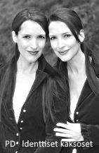

Miten käytät näitä muistiinpanoja tehokkaasti?
- Näiden muistiinpanojen avulla sinun on helppo kerrata kaikki keskeiset asiat persoonallisuuspsykan kurssista
- Kurssimuistiinpanoni sisältävät paljon tietoa. Opettaja voi jättää osan asioista käsittelemättä harkintansa mukaan.
- Lisäksi vasemmalta palstalta näet, mitä kurssissa erityisesti tulisi käsitellä (ks. keskeinen sisältö). Opettaja voi nostaa esiin joitakin erityisaiheita, joita näissä muistiinpanoissa ei ole.
- Mikäli ja toivottavasti, kun aiot kirjoittaa niin paljon elämässä ja monilla ammattialoilla tarvittavan psykologian oppimäärän, käy kaikki koulusi psykologian kurssit ja erityisesti viisi ensimmäistä valtakunnallista kurssia, sillä niistä tulevat kirjoitusten kysymykset.
- SISÄLLYSLUETTELO TOIMII KESKEISTEN ASIOIDEN KERTAUSLISTANA: Tarkista sen avulla, muistatko asian?
- Alleviivatut asiat ovat tärkeimpiä.
- Älä opiskele suotta henkilönimiä ellei nimi ole kirjoitettu ISOILLA KIRJAIMILLA!
- KATSO KUVAT - ne kertovat enemmän kuin sanat (PYRIN TUOTTAMAAN KUVIA LISÄÄ!!)
- Kertaa jokaiselle tunnille sisällysluettelosta (tai wilmasta opettajan antamat läksyt) aina alusta alkaen vilkaisten kaikki aiheet, samalla kokeillen, muistatko vielä tähän asti käydyt asiat
- Mikäli joudut olemaan poissa tunneilta, voit katsoa PS7ABI-kurssin kohdalta PS5-kurssin tiettyä kohtaa vastaavat aihevideot. © Jyrki Rossi, 2016
1. PERSOONALLISUUDEN MÄÄRITTELY JA TUTKIMINEN
1.1 Mitä persoonallisuudella tarkoitetaan?
- Persoonallisuus on suhteellisen pysyvä ominaisuus
- Vauvan temperamentista aikuisen luonteenkuvaukseen
- Persoonallisuuspsykologia tutkii yksilöllisiä eroja niin luonteessa kuin toiminnassa
- Perimä ja ympäristö muovaavat yksilön persoonallisuutta
1.2 Persoonallisuuden tutkiminen
- Persoonallisuuden tutkiminen on monipuolista
- Tunnettuja, mutta kiisteltyjä tutkimusmenetelmiä ovat projektiiviset kuvatestit
- Kaksos- ja adoptiotutkimukset persoonallisuuden tutkimusmenetelminä
- Itsearviointi on tärkeä persoonallisuuden mittari (subjektiivisuus)
2. MISSÄ MINÄ PIILEKSII?
2.1 Minä ja aivotoiminta
- Onko ihminen aivojensa marionetti?
- Otsalohkojen merkitys minuudelle ja persoonallisuudelle
2.2 Minän monia tulkintoja
- Minäkäsitys
- Identiteetti
- Itsetunto
- Minäpystyvyys
3. PERSOONALLISUUDEN SELITTÄMINEN ERI TEORIOISSA
3.1 Typologiat ja piirreteoriat
- Frenologiasta ruumiinrakennetyypityksiin
-
EYSENCKin temperamenttityypitys
-
CATTELin 16 PF-teoria
- Big Five nousee piirreteorioista suosituimmaksi
3.2 Psykodynaaminen persoonallisuusteoria
-
FREUDin ajatuksiin perustuva
- Seksuaalisuutta ja tarpeita korostava
- Tiedostamaton minä
3.3 Humanistinen persoonallisuusteoria
- Ihminen ainutkertaisena yksilönä
- Positiivinen näkökulma ihmiseen
-
MASLOWin itseään toteuttava ihminen
-
ROGERSin yksilöllinen ja ainutlaatuinen ihminen
-
FRANKLin tarkoitusta etsivä ihminen
3.4 Sosiokognitiivinen persoonallisuusteoria
-
ALBERT BANDURAn sosiaalisissa suhteissa kasvava ihminen
- Taustalla behaviorismi
- Minäpystyvyys ja omat tulkinnat itsestä ja toiminnasta vievät yksilöä eteenpäin
4. ÄLYKKYYS JA LAHJAKKUUS PERSOONALLISUUDEN OSANA
4.1 Älykkyys ja älykkyyden tutkimuksen taustaa
- Tukea tarvitsevien löytäminen
- Älykkyyden testaaminen alkaa
- Älykkyyden periytyvyys ja kulttuurisidonnaisuus
- Kehitysvammaisista savantteihin
4.2 Charles SPEARMANin yleisen älykkyyden teoria
4.3 Howard GARDNERin monien älykkyyksien teoria
- Yhdeksän älykkyyden lajia
4.4 Robert STERNBERGin älykkyyden triarkkinen malli
- Analyyttinen älykkyys
- Luova älykkyys
- Käytännöllinen älykkyys
4.5 Ovatko eläimet älykkäitä?
- Eläinten kieli ja ajattelu
- Eläinten tietoisuus
- Eläinten älykkyys
5. SOSIAALIPSYKOLOGIA TUTKII IHMISTÄ YHTEISÖSSÄ
5.1 Ihminen on laumaeläin
- Yksilö kuuluu moniin ryhmiin
- Tarpeet ajavat meidät liittymään toisiimme
- Primaari- ja sekundaariryhmät
- Ihminen oppii mallista ja samastuu ryhmäänsä
- Ryhmäkäyttäytymiseen liittyy normiviidakko
- Joukossa tyhmyys tiivistyy
5.2 Ihmisillä on ryhmässä omat roolinsa
- Persoonallisuus vaikuttaa roolitukseen
- Yhdenmukaisuus eli konformistisuus
- Roolin taakse voi piiloutua
5.3 Asenteet ja ennakkoluulot vaikuttavat ryhmien välisiin suhteisiin
- Kasvatuksen tulosta
- Stereotypia
- Rotuennakkoluulot
5.4 Kuuluisia sosiaalipsykologisia tutkimuksia
-
MILGRAMin tottelevaisuuskoe eli sähköshokkikoe
-
Zimbardon vankilakoe rooleista
- Sosiaalipsykologinen tutkimus on kokeellista: havainnointia, haastatteluja, kontrolloituja kokeita
© Jyrki Rossi, 2017
1. PERSOONALLISUUDEN MÄÄRITTELY JA TUTKIMINEN
1.1 Mitä persoonallisuudella tarkoitetaan?
• Persoonallisuuspsykologia tutkii yksilöiden välisiä eroja ja yhtäläisyyksiä niin luonteen kuin toiminnan alueilla .
- Persoonallisuus on kohtuullisen pysyvä ominaisuus aina vauvasta vaariin.
- Persoonallisuus voidaan määritellä psyykkisten ominaisuuksien kokonaisuudeksi.
- Aiemmin käytettiin termiä differentiaalipsykologia, joka viittasi yksinomaan yksilöiden välisten erojen tutkimiseen.
- Persoonallisuus onkin juuri sitä, missä me jokainen eroamme toisistamme, muodostumme yksilöllisiksi ja ainutkertaisiksi ihmisiksi (identtiset kaksosetkin ovat omia persoonallisuuksiaan samasta perimästä huolimatta).
- Toinen ihminen on hiljaisempi, toinen ulospäinsuuntautuneempi; toinen aggressivisempi, toinen ei näytä suuttuvan mistään jne.
- Yksilön minää eli persoonallisuutta voidaan selvittää a) perifeerisesti ulkoapäin, jolloin yksilöiden väliset erot ja havaittavissa olevat luonteenpiirteet ja toimintatavat korostuvat tai b) sentraalisesti eli minäkeskeisesti (tässä), jolloin yksilö itse pääsee kertomaan, miten hän kokee itsensä ja olemisensa ja toimintansa.
• Nykyisin korostuu jokaisen ihmisen yksilöllisyys. Toisaalta meissä kaikissa on kuitenkin tiettyjä luonteen ja persoonallisuuden toiminnan lainalaisuuksia, joita persoonallisuuspsykologia selvittää.
• Vauvaiän temperamentti seuraa väljästi läpi ihmisen elämän (Alexander Thomasin ja Stella Chessin mukaan):
- 1) Helpot eli helposti hoidettavat vauvat ovat ulospäinsuuntautuneita, tarkkaavaisia, aktiivisia, iloisia ja nauravaisia, eivät säikähdä helposti, mutta rauhoittuvat nopeasti.
- 2) Vaikeat (tai haastavat) eli vaikeasti hoidettavat vauvat: hyvin aktiivisia, mutta eivät kovinkaan tarkkaavaisia, säikähtävät ja reagoivat helposti ja pelokkaasti ja heitä on vaikea saada rauhoittumaan.
- 3) Hitaat eli hitaasti lämpiävät vauvat: edellisten välimuoto, melko aktiivisia ja tarkkaavaisia, eivät kovin nauravaisia, eivät pelästy tai reagoi kovinkaan herkästi, mutta rauhoittuvat hitaasti.
• Vauvan temperamentissa näkyy vahvasti perimän osuus. Ympäristö voi toki muuttaa yksilön persoonallisuutta ja temperamenttia suurestikin.
• Perimän ja ympäristön (nature-nurture) vaikutusta on tutkittu mm. kaksos- ja adoptiotutkimuksilla.
- Tunnetuimpia tapauksia (case) on Paula Bernsteinin ja Elyse Scheinin tapaus: nämä identtiset kaksoset erotettiin toisistaan vauvana vuonna 1968 ja he löysivät toisensa vasta 35-vuotiaina vuonna 2003 (lue tapauksesta netistä). He molemmat harrastivat musiikkia ja kirjoittamista. He molemmat olivat opiskelleet elokuva-alaa ja olivat lukiossa toimittaneet vuosikirjan. Yhdessä he julkaisivat v. 2007 kirjan Identical Strangers.
- Ääriesimerkkejä ympäristön vaikutuksesta yksilön persoonallisuuteen ja kehitykseen ovat ns. susilapset (ks PS2-kurssin muistiinpanot luku 1.2 tai hae kuvahaulla netistä "Amala ja Kamala")
- (1) Perimä (biologisten vanhempien) vaikuttaa mm. ulkonäköön, sukupuoleen, kypsymiseen, lahjakkuuteen ja älykkyyteen, fysiologiseen toimintaan, sairauksiin, urheilullisuuteen jne.
- (2) Ympäristö (kulttuuri, kasvatus, kokemukset) vaikuttaa meissä oppimiseen ja käyttäytymiseen hyvin laajasti mallien, roolien, virikkeiden, samastumisen, palautteiden, opittujen käyttäytymismallien, arvojen ja asenteiden kautta. Lisäksi stressi, sairaudet, päihteet ym. vaikuttavat persoonallisuuteemme.
- (3) Yksilöllisyys (omat kokemukset, valinnat, minäkäsitys ym.) jätetään usein pois perimän ja ympäristön ohella vaikuttavana tekijänä. Kuitenkin yksilö myöhemmässä vaiheessa tekee omia valintojaan ja ratkaisujaan itsenäisesti, jolloin oma suuntautuneisuus, kognitiivisuus, tilanteiden arviointi, arvot, asenteet ja tunteet vaikuttavat minään ja persoonallisuuteen.
• EKSTRA: Yksittäisten geenien vaikutus persoonallisuuteen. Muutamat persoonallisuudenpiirteet näyttävät olevan kytköksissä yksittäisten geenien (esimerkissä 5-HTTLLPR geeni) aiheuttamaan vaikutukseen hermosolujen synapseissa ja välittäjäaineissa. (Katso geeneistä, kromosomeista ja alleeleista tarkemmin netistä tai biologian kirjastasi). On todettu, että ns. lyhyen (s eli short) alleelin omaavat henkilöt ovat alttiimpia neuroottisuuteen kuin henkilöt, joilla on molemmissa kromosomeissa (homotsykootisti) pitkät (l eli long) alleelit. Kyseinen geeni vaikuttaa serotoniini-välittäjäaineeseen. Koska serotoniini vaikuttaa ihmisen tunnetasapainoon, ei ole ihme, että kyseinen geeni ja sen kromosomissa tapahtunut alleelivaihtelu vaikuttaa ihmisen henkiseen tasapainotilaan tuottaen joko alttiutta neuroottisuuteen tai madaltaen tätä. Samalla tavalla on todettu erään toisen geenin vaikuttavan yksilöiden väliseen elämystarpeeseen, seikkailunhaluun, jännitykseen ja mielihyvän etsintään. Tämä geeni vaikuttaa dopaaminin tuotantoon, joka taas on keskeinen tekijä aivojen palkkiojärjestelmässä (nucleus accumbens -tumake).
• Persoonallisuus on yhteydessä yksilön mielenterveyteen:
- Monet mielenterveysongelmat, häiriöt ja sairaudet, ovat osittain perinnöllisiä.
- Toiset ihmiset kestävät suuriakin vaikeuksia, kun taas toiset särkyvät pienemmistäkin vastoinkäymisistä.
© Jyrki Rossi, 2017
1.2 Persoonallisuuden tutkiminen
• Persoonallisuutta pyritään tutkimaan tieteellisesti.

- Silti juuri persoonallisuuden tutkiminen on tieteen kannalta haastavinta, sillä tavallisesti juuri yksilö itse tuntee itsensä parhaiten (subjektiivista, kun tieteen tulisi olla objektiivista)
- Tutkimuksen tulokset voivat vaihdella eri tutkimuskerroilla, koska yksilön tutkimushetken mielentila vaikuttaa tuloksiin (toistettavuuden ongelma).
- Tuloksia ei voida useinkaan yleistää, koska jokainen yksilö on ainutlaatuinen ja ainutkertainen (yleistettävyyden ongelma).
- Psykologian osa-alueista juuri persoonallisuuspsykologia pyrkii pureutumaan myös psyykeen tiedostamattomaan puoleen. Tällöin siirrymme jo hyvinkin kauaksi luonnontieteille asetetuista tieteen lähtökohdista (mm. objektiivisuus, kausaalisuus, positivismi).
• Nykyisin luonteenpiirteitä onkin pyritty etsimään vahvan tieteellisesti mm. geeniteknologian avulla.
- Geenitutkimus väittää, että perimämme eli geenit vaikuttavat ympäristöä ja kasvatusta voimakkaammin luonteenpiirteisiimme.
- Molekyyligenetiikka (molecular genetics) pyrkii psykologian puolella selvittämään mitkä geenit ovat yhteydessä mihinkin persoonallisuuden piirteeseen (ns. knockout-menetelmä, jossa tietyn geenin vaikutus poistetaan - voit halutessasi lukea lisää netistä, samoin The Human Genome Project:ista).
- Tällä hetkellä tutkimus on lähinnä laboratoriohiirillä toteutettavaa, jossa alkion kantasolujen DNA:ta muunnellaan.
- Hiirikokeissa on todettu, että esim. aggressiivisuus, ahdistuneisuus, oppiminen ja sosiaalisuus ovat vahvasti geenien johtamia piirteitä (Huom! hiirillä).
- Esim. ihmisellä skitsofrenian on löydetty olevan selkeästi yhteydessä geeniperimään.
- Geenit eivät kuitenkaan determinoi eli määrää kohtaloamme. Ihminen mukautuu erinomaisesti ympäristöön ja oppii mallista ja virheistään.
- Jopa identtiset kaksoset, joilla on sama geeniperimä eroavat ympäristön vaikutuksen kautta toisistaan (ks. edellä
Paula ja Elyse)
• Keskeinen lähde persoonallisuuden tutkimuksessa ovat kaksos- ja adoptiotutkimukset
- Tutkimukset ovat osoittaneet, että vanhempien kasvatuksen merkitys aikuisiän persoonallisuudelle on vähäinen verrattuna yksilön geeniperimän vaikutukseen.
- Kasvatuksen avulla lapsesta on lopultakin vaikea tehdä väkisin älykköä, urheilijaa, taiteilijaa tai edes aggressiivista (vrt. behaviorismin isän
JOHN WATSONin näkemyksiin, joissa hän uskoi ympäristön voivan tuottaa kenestä tahansa minkä tahansa alan huipun tai luuserin).
- Katso näistä aiheista YouTubesta halutessasi vlogini
PERSOONALLISUUS (kesto 45m26s)
• Persoonallisuuden perinteinen tutkiminen ja
tiedonkeruumenetelmät (lyhyesti, ks. PS1 luku 2.4):
1) Projektiiviset testit
- mm.
Rorschahcin musteläiskätestit tai
Murrayn TAT (Thematic Apperception Test) ja CAT (Children's Apperception Test) testit, jotka kaikki ovat kuvatestejä. Näiden paljon käytettyjen testien luotettavuus on kyseenalainen. Haastattelijan tuleekin seurata testejä tehdessään yksilöä kokonaisuudessaan tarkkaillen hänen käyttäytymistään, asentojaan, äänenpainojaan, ilmeitään, yleistä tunneviestintää jne.
- Nämä testit pyrkivät pureutumaan myös yksilön tiedostamattomampaan persoonallisuuden puoleen
- Psykologisia testejä koskevat tarkat tieteelliset vaatimukset, kuten reliabiliteetti (luotettavuus eli testi antaa uudelleen mitattaessa saman tuloksen), validiteetti (pätevyys eli testi mittaa juuri sitä, mitä sen on suunniteltukin mittaavan) ja lisäksi testit tulee standardisoida, jolloin testi on vertailukelpoinen ja soveltuu laajempaan käyttöön (vrt. ylioppilaskirjoitukset)
2) Kyselyt
- Toteutetaan nykyisin pääsääntöisesti nettikyselyinä, jolloin tietokoneohjelma laskee jatkuvasti vaadittuja tuloksia (keskiarvoja, - hajontoja, korrelaatioita jne.)
- Kyselylomakkeet, olivatpa paperisia tai nettipohjaisia, tulee suunnitella erittäin tarkasti, jotta saadaan luotettavaa tietoa osallistujien käyttäytymisestä ja persoonallisuudesta.
3) Haastattelut
- Haastattelemalla psykologi ennen muuta diagnosoi henkilön sen hetkistä tilaa ja saa näin perustietoa yksilön tukemiseksi.
- Varsinaisena tieteellisenä tiedonkeruumenetelmänä haastattelu on muiden paitsi kyselyjen kanssa kallis, hidas ja vain pientä otosta koskeva
4) Havainnointi eli tarkkailu eli observointi
- Henkilöä voidaan havainnoida ulkopuolelta, mutta se on kohtuullisen työlästä ja aineiston purku esimerkiksi videomateriaalista on aikaa vievää
- Nykyisin käytetään ns. kokemusotosmenetelmää (ESM, experience-sampling method), jossa yksilö tarkkailee omia tuntemuksiaan ja kokemuksiaan usein arvaamattomana ajankohtana ja raportoi niitä jopa useasti päivässä esim. älypuhelimen avulla tutkijalle/psykologille.
- Itsetarkkailu eli introspektio on yksi itsehavainnoinin perinteisiä tapoja
5) Lähdeaineiston käyttö
- Yksilöstä kerätään tietoa hänen henkilöhistoriansa kautta päiväkirjojen, kirjeiden, sähköpostien, valokuvien jne. avulla.
6) Fysiologiset mittaukset
- Ovat yhä yleistyvä tiedonkeruumenetelmä.
- Aivotutkimusmenetelmät (ks. PS3 kurssin muistiinpanot)
- SCR eli Skin Conductance Response (aiemmin GSR ei Galvanic Skin Response), jossa tutkitaan sormen päistä tai kehitetyn "käsineen" avulla henkilön autonomisen hermoston toimintaa: sydämen sykettä, verenpainetta, ihon lämpötilaa, hikoilua jne.
© Jyrki Rossi, 2017
2. MISSÄ MINÄ PIILEKSII?
2.1 Minä ja aivotoiminta
• Aivokuvantaminen on kehittynyt yhä funktionaalisempaan suuntaan eli pystymme nykyisin kuvantamaan, missä ihmisen ajattelu, tunteet, kielellisyys ym. aivoissa piilevät. Tällaisia kuvantamismenetelmiä ovat mm. fMRI-skannaus, MEG- ja PET-kuvaus.
• Tutkimus on löytänyt persoonallisuuteen kuuluvat piirteet erityisesti otsalohkolta.
- Keskeisessä asemassa on etuotsalohko, joka jakautuu kolmeen pääalueeseen (näitä ei tarvitse lukiotasolla osata! Etuotsalohkon alaosassa orbitofrontaalinen, sivuilla "selänpuolella" dorsolateraalinen ja etuotsalohkon yläosassa ventromediaalinen etuotsalohko).
- Etuotsalohkolla sijaitsevat useat persoonallisuuteen liittyvät toiminnot: tarkkaavaisuus, päätöksenteko, tunteet, tietoisuus, moraali, ongelmanratkaisu, suunnitelmallisuus jne.
- Aisteista tuleva tieto yhdistyy etuotsalohkolla, jossa sitten tapahtuu suunnitelmallinen toiminnanohjaus.
- Tunteet ja tunneviestintä on keskeinen osa persoonallisuutta ja myös nämä sijaitsevat etuotsalohkolla. Itse tunne syntyy amygdala- eli mantelitumakkeessa ulkoisten ärsykkeiden vaikutuksesta, mutta tunteiden tiedostaminen tapahtuu etuotsalohkolla.
• Minuus sijaitsee vahvasti etuotsalohkolla. Kun yksilö katsoo peilistä itseään tai pohtii itseään, aktivoituvat juuri etuotsalohkon alueet aivoissa.
• EKSTRA: Uusin tutkimus (Human Connectome Project, 2017) on analysoinut aivoja Big Five-persoonallisuudenpiirteiden näkökulmasta.
- Big Five (Costa & McCrae) jakaa persoonallisuuden viiteen pääpiirteeseen, jotka ovat ulospäinsuuntautuneisuus (engl. Extraversion), neuroottisuus (engl. Neuroticism, emotionaalinen tasapainottomuus), tunnollisuus (engl. Conscientiousness, mm. itsekontrollia, siisteyttä), sovinnollisuus (engl. Agreeableness, esim. avuliaisuutta) ja avoimuus kokemuksille (engl. Openness to experience, kuten luovuus, avomielisyys, uteliaisuus).
- Tutkijat löysivät persoonallisuuden piirteiden sijoittuvan eri osiin aivokuorella aivokuoren paksuuteen ja poimuisuuteen liittyen.
- Esim. neuroottisuuden, joka altistaa mielenterveysongelmille ja ahdistushäiriöille on havaittu sijaitsevan otsalohkon aivokuoren uloimmissa paksummissa kerroksissa laaja-alaisesti, kun taas avoimuuden, johon liittyy uteliaisuus ja luovuus on huomattu sijaitsevan aivokuoren ohuemmissa kerroksissa suppeammilla alueilla.
- Human Connectome Project
- Tutkimus on kuitenkin asiassa vasta alkuvaiheessa, mutta kehittyessään auttaa ymmärtämään erityisesti aivokuoren merkitystä persoonallisuudelle ja persoonallisuuden häiriöiden ym. diagnosointia.
•
Phineas GAGEn tapaus on yksi tunnetuimpia tapaturman persoonallisuuteen vaikuttaneita esimerkkejä psykologian kirjoissa. Koska
GAGEn otsalohkon vasenpuoli lensi räjähdysonnettomuudessa rautatangon mukana avaruuteen, aiheutti se miehessä huomattavan muutoksen: kiltistä, avuliaasta, tunnollisesta ja toisista huoltapitävästä mukavasta työtoverista ja perheenisästä tuli ilkeä ja sietämätön henkilö.
- Nykyisin tiedetäänkin, että etuotsalohkon oikea puoli liittyy vihaan, pelkoon, negatiivisuuteen, kun taas vasen puoli pyrkii säätelemään amygdalasta tulevia kielteisiä tunteita ja näin tasaamaan kokonaistunnetilaa.
• Ihmisten aivotoiminta on yksilöllistä ja mm. aivoverkosto (ent. retikulaarijärjestelmä), joka säätelee ihmisen aktivaatiota ja vireyttä, toimii eri ihmisillä eri tavoin. Usein ulospäinsuuntautuneiden ihmisten aivoverkosto aktivoituu sopivalla tavalla vaikkapa ihmisvilinässä, jännittävän elokuvan yhteydessä, kun taas sisäänpäinkääntyneiden ihmisillä vastaavissa tilanteissa syntyy suojautumispyrkimyksiä, he eivät pidä äänekkäästä ihmisvilinästä, vaan rauhallisesta yksin olosta.
© Jyrki Rossi, 2017
2.2 Minän monia tulkintoja
• Minää on filosofoitu kautta ihmiskunnan historian:
- Kuka minä olen? Kysymys on eksistentiaalinen, ihmisen olemassaolon peruskysymyksiä ja lähinnä filosofit ja uskontojen edustajat ovat pyrkineet kysymykseen antamaan omat vastauksensa.
- "Minä" olen "sivullinen", elämää sivusta seuraava eksistoiva olento (Albert Camus). Minä olen tarkoitusta vailla oleva absurdi olento (Jean-Paul Sartre). Minä olen epäilevä sielu, joka en voi epäillä sitä että epäilen, joten "cogito ergo sum" = "Ajattelen siitä seuraa Olen" (René Déscartes). Minä olen jälleensyntymisen kiertokulkuun vangittu ei-minuus, jonka tulisi vapautua harhaisen minuuden taakasta ja vaipua nirvanaan (Siddhartha Gautama Buddha). Minä olen rakastettava Jumalan lapsi, luotu ikuisuutta varten (Jeesus Nasaretilainen). Ja listaa voisi jatkaa loputtomiin.
• Itsetajunta, itsetietoisuus syntyy lapsella noin puolitoista vuotiaana (tunnistaa peilistä oman kuvansa). Itsetajuntaan (self-awareness) kuuluu kyky tiedostaa omat ajatukset, tunteet, tahtomiset ja kokemisen maailma.
• Minäkäsitys on laaja kuva itsestä, omista ominaisuuksista (niin fyysisistä kuin psyykkisistä), arvoista, päämääristä jne.
- Suomenkielessä minäkäsityksen synonyymeina on pidetty käsitteitä "minäkuva", joista psykologian mukaan minäkäsitys vasta kehittyy; ja "itsetunto", joka on minäkäsitystä suppeampi, sisältäen lähinnä omanarvontunnon, kuinka arvokkaana itseäni pidän.
- Minuus on psykologien piirissä jaettu kymmenillä tavoilla eri osiin. Karen Horney, saksalainen psykoanalyytikko (1885-1952) jakoi minäkäsityksen kahteen puoleen: 1) todellinen minä (real self), jollainen todellisesti olen, ja 2) ihanneminä (ideal self), jollainen mielestäni minun tulisi olla. Horneyn mukaan on tärkeää tunnistaa ero kahden minän välillä ja itsen kasvu, kehitys ja onnellisuus saavutetaan tavallisesti kohtaamalla todellinen minuutemme.
• Itsetunto (self-esteem) on omanarvontuntoa, kuinka arvokkaana pidän itseäni. Itsetunto ei liity välttämättä menestymiseen elämässä, vaan ihminen voi kokea olevansa arvokas ja tärkeä, koska hyväksyy itsensä sellaisena kuin on.
• Minäpystyvyys (self-efficacy) on
ALBERT BANDURAn kehittämä käsite, jolla tarkoitetaan yksilön omaa kyvykkyyttä saavuttaa halutut päämäärät ja tulokset.
- Minäpystyvyys vaikuttaa ihmisen toimintaan kaikilla elämän alueilla. Henkilö, jolla on heikko minäpystyvyys ei välttämättä edes yritä hakea vaikkapa opiskelupaikkaa, koska ei usko omiin kykyihinsä ja mahdollisuuksiinsa. (Lue minäpystyvyydestä enemmän Sosio-kognitiivisen persoonallisuusteorian yhteydestä).
• Identiteetti on hyvin laaja käsitys itsestä, omasta persoonallisuudesta, pystyvyydestä ja minuudesta.
- Identiteetti voidaan jakaa erilaisiin osiin, kuten sukupuoli-identiteettiin tai ammatti-identiteettiin.
- Muita identiteetin osia ovat esim. sosiaalinen identiteetti (mihin ryhmään kuulut), katsomuksellinen identiteetti (oletko uskonnollinen) ja kulttuurinen identiteetti (esim. pitkään maassa asunut mustaihoinen, kokee olevansa kulttuuri-identiteetiltään jo täysin suomalainen).
•
William Jamesin (Yhdysv. filosofi ja psykologi 1842-1910) minuuden kaksi puolta:
-
James on Amerikoissa vastaavassa asemassa kuin
Wilhelm Wundt Euroopassa. Ikäänkuin ensimmäinen tosi psykologi.
-
James tunnetaan lukion psykologiassa parhaiten
Jamesin ja
Langen tunneteoriasta (ks. PS4 luku 1.3)
-
James jakoi minuudeen (self) kahteen puoleen: 1) MINÄ SUBJEKTINA (engl. I eli pure ego) ja 2) MINÄ OBJEKTINA (engl. me eli empirical self).
- 1) MINÄ SUBJEKTINA olen (I, pure ego) minä itse kokijana (ajatteluni subjekti), joka ohjaan toimintaani, jolla on tajunta itsestä ja kyky havainnoida omia kokemuksiani. Voidaan puhua minätietoisuudesta, joka sisältää menneisyyden kokemukseni, nykyisyyteni ja myös tulevaisuuden minäni.
- 2) MINÄ OBJEKTINA olen (me), empiirisesti havaittava kohde, jonka toiset minusta näkevät, ja jota voin kuvailla persoonallisuuden piirteitteni kautta, tai ihmissuhteitteni kautta. Minä objektina jakautuu
Jamesillä kolmeen osaan: a) Materiaalinen minä (material self), johon kuuluu kehoni piirteet, pukeutumiseni, omaisuuteni jne.
James piti pukeutumista tärkeänä, koska usein vaatteiden kautta viestitämme toisille sitä, mitä olemme. b) Sosiaalinen minä (social self), joka vaihtelee tilanteittain, missä ihmisryhmissä, sosiaalisissa tilanteissa olemme. Esimerkiksi lukiolainen tuo esiin erilaisen minän opiskelijatovereilleen kuin mitä hän on opettajalleen tai vanhemmilleen. c) Henkinen minä (spiritual self), joka on ihmisen syvin olemus, tietoisuus itsestä, omasta moraalista ja hengellisyydestä, jota ei voi objektiivisesti tutkia.
Jamesin mukaan henkisen minä tiedostaminen on ihmiselle hyvin palkitseva kokemus.
James olikin kuuluisa juuri uskonnonfilosofian tutkijana ja pohtijana.
-
Jamesin teorian keskeisenä piirteenä oli se, että minä on jatkuvasti muuttuva, erilainen nyt kuin eilen tai huomenna. Tämä koski niin materiaalista, sosiaalista kuin henkistäkin minää. Siksi minää tuli pohtia aina juuri nyt hetken minänä.
© Jyrki Rossi, 2017
3. PERSOONALLISUUDEN SELITTÄMINEN ERI TEORIOISSA
3.1 Typologiat ja piirreteoriat
• TYPOLOGIOITA:
• Varhaisimpia persoonallisuuden tyypityksiä oli saks. lääkärin
Franz J. Gallin (1758-1828) kehittelemä
frenologia, jossa pään muodoista, kuhmuista, pyrittiin määrittelemään ihmisen persoonallisuus. Ajatuksena oli, että aivojen tiettyjen alueiden suuruus näkyi pään ulkoisessa muodossa ja näin ollen pään muoto heijasteli ihmisen tiettyjä persoonallisuuden piirteitä, kuten armeliaisuutta, ystävällisyyttä, laiskuutta, älykkyyttä jne.
• Toinen vastaavanlainen "näennäistieteisiin" nykyisin laskettava oppi oli sveitsiläisen papin
Johann Kaspar Lavaterin (1741—1801) vuosituhansien takaa uudelleen esiinnostama
fysiognomia. Siinä ihmisen kasvonpiirteiden ja osittain yleisen ulkomuodon perusteella pääteltiin ihmisen persoonallisuutta.
• Vielä 1900-luvulla ihmisen ruumiinrakenne nousi persoonallisuuden tyypityksen perustaksi, kun amerikkalainen psykologi
William Sheldon (1898-1977) julkaisi vuonna 1945 kirjansa Atlas of Men (joka kehitteli edelleen aiempaa ns.
Kretschmerin typologiaa). Siinä hän loi
ruumiinrakennetyypityksen, jonka mukaan 1) ektomorfit ovat hoikkia, kapeita, pitkiä, mutta persoonaltaan älykkäitä, ajattelevia, sisäänpäinkääntyneitä, taiteellisia, tunteiltaan viileitä, yksin viihtyviä, 2) endomorfit ovat pyöreitä, rasvakudosta helposti kerääviä, hartiat ovat kapeat, persoonallisuudeltaan he ovat sosiaalisia, hauskoja, ahmattimaisia, huumoria viljeleviä ja mukavuudenhaluisia, 3) mesomorfit on edellisten välimuoto, joilla on suurehko pää, leveät hartiat ja he ovat lihaksikkaita ja atleettisia, heidän rasvaprosenttinsa on pieni, persoonina he ovat seikkailunhaluisia, rohkeita, fyysisesti vahvoja ja aktiivisia, kilpailuhenkisiä, johtajatyyppejä, jotka rakastavat riskinottoja.
•
PIIRRETEORIOITA:
• Engl.amerikkalainen psykologi
Raymond B. Cattell (1905-1998) käytti tilastollista faktorianalyysia etsiessään keskeisiä persoonallisuuden piirteitä. Hänen teoriaansa kutsutaan
Cattellin 16PF-malliksi, jossa PF tarkoittaa Personality Factors.
- Hän jakoi piirteet ydinpiirteisiin, jotka nousivat esiin faktorianalyysissä ja pintapiirteisiin, jotka ovat havaittavia, kuten iloisuus, mietteliäisyys jne.
-
Cattellin 16 ydinpiirrettä voidaan ilmaista vastakohtien kautta seuraavasti (yksilö sijoittuu 10-asteikolla janan tiettyyn kohtaan, jolloin voidaan piirtää persoonallisuusprofiili):
1) Pidättyväinen, viileä <---> lämmin, sydämellinen
2) Vähemmän älykäs <---> älykäs, lahjakas
3) Tunneherkkä, epävakaa <---> emotionaalisesti vakaa, kypsä
4) Alistuva, nöyrä <---> hallitseva, aggressiivinen
5) Varovainen, hillitty <---> avoin, vilkas, puhelias
6) Heikkoluonteinen, häilyvä <---> tunnontarkka, moraalinen
7) Ujo, arka, epäröivä <---> rohkea, seurallinen, estoton
8) Tunteeton, kova <---> herkkä, hienotunteinen, esteettinen
9) Luottavainen, suvaitsevainen <---> epäilevä, mustasukkainen, epäluuloinen
10) Realisti, käytännöllinen, (sovinnainen) <---> (epäsovinnainen), epäkäytännöllinen, hajamielinen
11) Aito, teeskentelemätön <---> teennäinen, varautunut
12) Varma, itsevarma, lujahermoinen <---> epävarma, huolestunut, hermostonut
13) Konservatiivinen, perinteinen, varovainen <---> uudistusmielinen, liberaali, joustava
14) Riippuvainen, vaikutuksille altis <---> itsenäinen, oman tien kulkija
15) Saamaton, huolimaton, häilyvä <---> perfektionisti, tunnollinen, sinnikäs
16) Rento, rauhallinen, tasapainoinen <---> jännittynyt, rauhaton, kärsimätön
• Saks.britt. psykologi
Hans EYSENCK (1916-1997) korosti persoonallisuuden biologista perustaa ja perimää. Hän oli tarkan tieteellinen ja kehitteli oman persoonallisuuden piirreteorian, joka muodostuu kolmesta ulottuvuudesta: 1) neuroottisuus (epävakaa tunne-elämä, masentunut ja syyllisyydentuntoinen), 2) psykoottisuus (minäkeskeinen, impulsiivinen ja aggressiivinen) ja 3) ekstroverttiys-introverttiys (ulospäinsuuntautunut - sisäänpäinkääntynyt).
-
EYSENCKin teoriaan kuuluu osana vanhat antiikin lääkäriltä
Hippokrateelta uuteen käyttöön otetut ruumiinnesteistä nimetyt piirteet, joissa ihminen on a) sangviininen eli optimistinen, impulsiivinen, joustava, innostunut, energinen, hauska; b) koleerinen eli vahva, hyökkäävä, johtaja, itseriittoinen, suora; c) melankolinen eli perfektionisti, tunteellinen, tarkka, ihanteisiin pyrkivä, taiteellinen; d) flegmaattinen eli hidas, laiskahko, humoristinen, nokkela, sympaattinen.
-
EYSENCKin mukaan koleeris-melankoliset henkilöt ovat taipuvaisempia mielenterveysongelmiin, neuroottisuuteen, kun taas sangviinis-flegmaattiset ovat tasapainoisempia mieleltään.
• Nykyisin tärkeimpänä teoriana pidetään yhdysvaltalaisten
Paul Costan (1942-) ja
Robert McCraen (1949-) Viiden faktorin persoonallisuusmallia:
Big Five (Viisi Suurta).
- Teoria on hahmoteltu nykytutkimuksen valossa eri kansallisuuksista (mm. Yhdysvallat, Kiina, Japani, Italia, Unkari, Turkki jne.). Piirteet ovat jatkumoja, joissa on ääripäitä (ekstroverttiyden ääripäitä ovat esim. rasittavan ylisosiaalinen - täysin sulkeutunut)
1) Ekstroverttiys (ulospäinsuuntautuneisuus): sosiaalinen, aktiivinen, puhelias <---> yksin viihtyvä, passiivinen
2) Neuroottisuus (tunne-elämän epätasapainoisuus): tunteellinen, ailahteleva, herkkä <---> tasapainoinen, rento, itseen tyytyväinen
3) Miellyttävyys (sovinnollisuus, toisiin suhtautuminen): avulias, yhteistyökykyinen, empaattinen <---> kilpaileva, itsekäs, haastava
4) Vastuuntuntoisuus (järjestelmällisyys ja päämääräsuuntautuneisuus): siisti, suunnitelmallinen <---> spontaani, huolimaton
5) Avoimuus kokemuksille (suhtautuminen uusiin asioihin): luova, taiteellinen, kiinnostunut <---> pitäytyy vanhassa, turva tavallisuudessa.
© Jyrki Rossi, 2017
3.2 Psykodynaaminen persoonallisuusteoria
• Suuntauksen isä: itävaltalainen lääkäri ja psykologi Sigmund FREUD (1856-1939).
•
EKSTRA: FREUD on kiistämättä historian tunnetuin psykologi perustamansa terapiasuunnan, psykoanalyysin, sekä erityisesti seksuaalisuuden korostuksensa ja unien tulkintansa vuoksi. Lisäksi hänen suuntauksensa sai huomattavan määrän myöhemmin kuuluisiksi tulleita psykologeja (Anna Freud, Carl Gustav JUNG, ERIK H. ERIKSON, Karen Horney, Erich Fromm, Margaret Mahler, Alfred Adler, DANIEL STERN, JOHN BOWLBY jne.
- Kun vuonna 2002 selvitettiin, ketkä psykologit ovat maailman eniten lainattuja (siteerattuja) tutkimuksissa ja kirjallisuudessa, jäi FREUD sijalle kolme (3). Syynä on lähinnä hänen psykologisten näkemystensä erikoisuus sekä se, että useat hänen teorioistaan on myöhemmin osoittautunut vääriksi ja siksi suurin osa hänen jälkeensä tulleista psykologeista ei ole hyväksynyt hänen näkemyksiään.
- Maailman siteeratuimmat psykologit ovat 1) B.F. SKINNER (behavioristi, tunnettu välineellisen ehdollistuminen ja eläinkokeiden tekijä), 2) JEAN PIAGET sveitsiläinen lapsipsykologi, 3) FREUD, 4) ALBERT BANDURA Bobo doll-nukkekokeista, mallioppimisesta ja minäpystyvyydestä tunnettu sosiokognitiivisen suuntauksen isä, 5) Leon Festinger sosiaalipsykologi, joka loi kognitiivisen dissonanssin käsitteen, 6) CARL ROGERS humanistinen psykologi ja asiakaskeskeisen terapian kehittäjä ja 7) Stanley Schachter kognitiivisuutta korostavan tunneteorian kehittelijä, tunnettu myös kuuluisasta "adrenaliinikokeestaan".
•
FREUD kiinnostui ihmisen psyykeen mekanismeista erityisesti ranskalaisen neurologin
Jean-Martin Charcotin (1825-1893) myötä. He yhdessä tutkivat naispotilaita, joilla oli ns. hysteria, joka tuolloin sisälsi laajasti erilaisia mielenterveydenongelmia, lähinnä sellaisia, jotka ilmenivät yksilön käytöksessä.
FREUD ja
Charcot käyttivät aluksi menetelmänä hypnoosia, jonka
FREUD hylkäsi myöhemmin, koska läheskään kaikkia ei voitu hypnotisoida ja hypnoosissa esiin tullut tieto ei välttämättä ollut yksilön omaa kokemusperäistä tietoa. Hypnoosin alaisuudessa naisten ongelmat osoittautuivat usein seksuaalisiksi, kuten lapsuudessa tapahtuneiksi hyväksikäyttökokemuksiksi.
•
FREUD toi esiin yhtenä historian kuuluisimpana tapauksena ystävänsä lääkäri
Josef Breuerin potilaan
Anna O:n (Bertha Pappenheim) hysterian. Annalla oli useita hysterian oireita: käden halvaus, karsastus, saksan ja englannin kielten sekoittuminen ja mm. kuuluisa vesifobia (koska oli nähnyt koiran juovat vettä ihmisten juoma-astiasta).
• Psykodynaaminen termi tulee siitä, että
FREUDin mukaan
ihmisen psyykettä (ja samalla koko toimintaa) ohjaavat jatkuvasti liikkeessä olevat alitajuiset, tiedostamattomat voimat (kr. dynamis). Näitä ovat halut, pelot, toiveet, motiivit ja torjutut muistot.
• Psykoanalyysi on terapiamuoto, jossa pyritään vapauttamaan henkilö tiedostamattoman hallitsemista voimista lähinnä vapaan assosiaation (keskusteluhoito, jossa potilas vapaasti tuo esiin mielleyhtymiään) ja unien tulkinnan avulla.
•
FREUDin tärkeimpinä löytöinä pidetään 1) ajatusta tiedostamattomien motiivien vaikutuksesta elämäämme sekä 2) varhaislapsuuden vaikutusta elämänkaaren muihin vaiheisiin.
•
Ihmisen minä, persoonallisuus, jakautuu kolmeen tasoon: 1) tietoiseen (nyt-hetkellä mielessä ja aisteissa olevat asiat), 2) esitietoiseen (muistoista helposti palautettavat asiat) ja 3) tiedostamattomaan (torjutut toiveet, halut, pelot jne.)
•
FREUDin teoria mielen (sielunelämän) rakenteista on myös kolmijakoinen:
- 1) Id (das Es) eli "Se" on ihmisessä syntymästä saakka ja on mielihyvän ja halujen keskus meissä. Id on kokonaan tiedostamaton, mutta vaikuttaa jatkuvasti elämäämme, tunteisiimme ja valintoihimme. Id liittyy erityisesti perus- ja seksuaalisiin tarpeisiimme. Id on myös tunne-elämän keskus. Id toimii mielihyväperiaatteen mukaan, pyrkien täyttämään halumme ja tarpeemme.
- 2) Ego (das Ich) eli "Minä" on ihmisen lähinnä tietoinen ratkaisuja tekevä, ajatteleva osa. Ego syntyy Id:stä jo varhain ja vastaa Idin tarpeisiin huomioiden omantunnon, ympäristön ym. vaikutuksen. Ego sijoittuu osin kaikille tietoisuuden tasoille, koska egoon kuuluvat defenssi- eli puolustusmekanismit, jotka ovat tiedostamaton osa egoa.
- 3) Superego (das Über-ich) eli "Yliminä" syntyy lapselle moraali- ja normikasvatuksen myötä n. 3-4 ikävuodesta ylöspäin. Yliminä pyrkii rajoittamaan Idin haluja ja tarpeiden tyydytystä. Esimerkiksi yliminä estää meitä toteuttamasta seksuaalisia halujamme ihmisten nähden. Yliminä toimii kasvatuksen pohjalta, joten se voi tietyissä ihmisyhteisöissä olla hyvinkin jyrkkä ja kaikenkieltävä. Egon tavoin superego toimii tietoisuuden kaikilla tasoilla.
- Usein psyykkisten häiriöiden taustalta löytyykin liian jyrkkä yliminä.
FREUD loi teoriansa ns. viktoriaanisella ajalla, jolloin seksuaalisuus oli hyvin tabu (salattu, kielletty asia). Siksi
FREUD havaitsi mielenterveysongelmien syiden liittyvän usein seksuaalisuuteen.
•
FREUDin teoriaan kuuluvat vielä
Charles DARWINin evoluutioteorian pohjalta nousseet
kaksi viettiä: seksuaalisuus (libido) ja aggressiivisuus (thanatos). Ihmisen pyrkimyksenähän on ennen muuta lisääntyä ja säilyä hengissä.
• Katso
FREUDin psykoseksuaalisen kehityksen vaiheet PS2 luku 5.4.
•
Muutamien Freudin seuraajien perusajatuksia:
- Alfred Adler loi käsitteen alemmuuskompleksi. Hänen mukaansa ihmisen pyrkimys on olla parempi kuin toiset ja näin me haluamme luoda ainutlaatuisen oman elämämme.
- CARL G. JUNG ei hyväksynyt FREUDin seksuaalisuuden korostusta ja ateismia, vaan näki uskonnollisuuden tärkeäksi osaksi yksilön psyykkistä tasapainoa. Kun JUNGilta kysyttiin, onko Jumala olemassa, hän vastasi: "Minä tiedän". JUNG kehitteli ns. analyyttisen psykologian. Hän jakoi ihmisen alitajunnan kahteen osaan: 1) kollektiivinen alitajunta, johon kuuluivat esi-isiltämme perityt muistot, tarinat, kertomukset, jotka olivat kaikille yhteisiä, universaaleja. Näihin hän liitti myös arkkityypit, kuten ajatukset siitä, että vanhukset ovat viisaita, äidit ovat helliä jne. 2) yksilöllinen alitajunta on kullakin oma ja erilainen ja syntyy omien kokemusten kautta. JUNG korosti persoonallisuudessa yksilön itsensä toteuttamista (self-realization), jossa taide oli merkittävässä roolissa.
- Karen Horney ei hyväksynyt FREUDin ajatuksia oidipuskompleksista eikä erityisesti "peniskateudesta". Horneyn mielestä nämä opit alensivat naista. Horneyn mielestä naisen alemmuus/alemmuudentunto johtui hänen riippuvuudestaan miehestä (joka huolehti perheen toimeentulon). Horneyn mukaan persoonallisuuden kehityksen keskeisin pyrkimys oli turvallisuus, kyky kehittää toimivia ihmissuhteita.
- Erich Fromm koki teknologian kehityksen vievän ihmisiä eroon toisistaan. Fromm koki, että teknologia ajoi ihmistä "pakoon vapauteen" (escape from freedom) eli käytännössä lähemmäksi toisiamme, ihmisiä. Fromm ajatteli myös, että tärkein ihmisen motiivi on paeta kuoleman pelkoa. Tässä paossa toiset ihmiset ovat merkittävä tuki.
© Jyrki Rossi, 2017
3.3 Humanistinen persoonallisuusteoria
• Humanistinen psykologia syntyi kritiikkinä psykodynaamisen suuntauksen erittäin pessimistiselle ihmiskuvalle, jossa ihminen on lisääksi passiivinen ja elämänkaarensa aikana tiedostamattomaan kertyneiden pelkojen ja toiveiden vanki.
• Suuntaus korostaa kolmea perusasiaa: 1) VAPAUS, ihminen on vapaa toteuttaessaan ja eläessään omaa elämäänsä, 2) VASTUU, ihmisellä on kyky ottaa vastuu omasta elämästään ja teoistaan, ja 3) MUUTOS, ihmisellä on kyky muuttua, muuttaa käyttäytymistään ja asenteitaan.
• Humanistisen psykologian suuri kolmikko ovat: ABRAHAM MASLOW, CARL ROGERS ja Viktor FRANKL.
- Näistä MASLOWia (1908-1970) on käsitelty jo useammassa kurssissa hänen tarvehierarkiansa vuoksi. Hänen mielestään persoonallisuuden keskeisin tavoite oli pyrkiä toteuttamaan itseään, olemaan luova. Tätä ei kuitenkaan juuri kukaan hänen teoriansa mukaan saavuta. Mutta nykyiset MASLOWin kannattajat pitävätkin tärkeämpänä matkaa itsensä toteuttamiseen kuin tarvehierarkian ylimmän, viidennen tason, saavuttamista. (Ks. PS1 luku 4.5)
- ABRAHAM MASLOW kiteytti ihmisen keskeiset pyrkimykset kuuteen kohtaan, joissa ihminen on toteuttamassa itseään:
1) Tietoisuus itsestä ja itsensä hyväksyminen
2) Avoimuus kokemuksille ja spontaanius
3) Kyky nauttia työstä, joka tuo elämään sisältöä
4) Kyky kehittää läheisiä ihmissuhteita, mutta pysyä silti itsenäisenä
5) Hyvä huumorintaju
6) Halu löytää kokemuksia, huippuhetkiä, elämässä
• Kaikkein tunnetuin humanistisen psykologian edustaja on CARL ROGERS (1902-1987).
• ROGERS näki ihmisen erittäin optimistisesti, positiivisessa valossa. Häntä voidaankin pitää nykyisin suositun positiivisen psykologian alkuperäisenä vaikuttajana. ROGERS näki ihmisen ensisijaisesti moraalisena, toisille hyvää tahtovana ja avuliaana. Keskeistä persoonallisuudelle oli toteuttaa itseään, löytää oma itsensä, arvostaa itseään, olla avoin kokemuksille, joita elämä tuo, olla valmis kuuntelemaan ja kohtaamaan toisia ihmisiä (empatia), ja olla avoimesti oma itsensä toisten seurassa.
- ROGERSin mukaan ihminen toteuttaa itseään parhaiten, jos hänen a) minäkuva (self-image) ja toisaalta hänen ihanneminänsä (ideal self) vastaavat mahdollisimman paljon toisiaan.
-ROGERSin teesit täyttä elämää elävästä ihmisestä ovat seuraavat (käännökset minun):
1) Ole avoin kokemuksille (open to experiences)
2) Elä tässä hetkessä (existential living)
3) Luota omiin tunteisiisi (trust feelings)
4) Toteuta itseäsi, ole luova (creativity)
5) Ole tyytyväinen elämääsi, elä täysillä (fullfilled life)
• ROGERS kehitteli ns. asiakaskeskeisen terapian, jossa terapiaan tullut henkilö ei ollut autettava potilas, vaan aktiivinen, itse itsensä parhaiten tunteva asiakas. Terapiassa oli keskeistä terapeutin ehdoton asiakkaan hyväksyminen ja positiivinen asenne häneen. ROGERSin lähtökohta ehdottomasta positiivisesta huomiosta asiakasta kohtaan onkin muodostunut nykypsykologien keskeisimmäksi ja tehokkaimmaksi ihmisen kohtaamistavaksi. Asiakaskeskeinen terapia oli myös ryhmäterapiaa. ROGERS kehitti ns. kohtaamisryhmät (encounter groups), joissa samoista ongelmista kärsivät ihmiset saivat vertaistukea toinen toisiltaan ja AA-kerhomaisesti (Alcoholics Anonymous) ehdotonta hyväksyntää ja positiivista kohtaamista (osin vastaavanlainen oli ROGERSin jo 1940-luvulla kehittämä T-group, joka korosti herkkyyttä ja jossa saatettiin olla halausyhteydessä toisiinsa).
• Viktor FRANKL (1905-1997) oli itävaltalainen neurologi ja psykologi, joka joutui natsisaksan keskitysleirille (mm. Auschwitz ja Dachau), mutta selvisi sieltä hengissä ja kehitteli kokemustensa pohjalta ns. logoterapian. FRANKLin mukaan ihmisen persoonallisuuden keskeisin tuki on elämän tarkoituksellisuuden löytäminen. Elämän tarkoitus ei merkitse tässä uskonnollista elämäntarkoitusta, vaan yleensä elämän mielekkyyden kokemista. Yksilö, joka löytää elämäänsä sisällön ja mielekkyyden, saavuttaa todellisen ihmisyytensä. Tarkoitus voi löytyä a) suuntautumalla ulospäin omasta itsestä toisten ihmisten auttamiseen, yhteisölliseen kanssakäymiseen, tai b) elämyksellisyyteen luonnon, toisten ihmisten, taiteen jne. kautta.
© Jyrki Rossi, 2017
3.4 Sosiokognitiivinen persoonallisuusteoria
• Psykologian yksi tunnetuimpia kokeita on ollut kanadalais-amerikkalaisen ALBERT BANDURAn (1925-) sekä Rossin ja Rossin vuonna 1961/1963 tekemä kokeellinen tutkimus, johon osallistui 36 poikaa ja 36 tyttöä Stanfordin yliopiston päiväkodista, iältään 3-6 vuotiaita.
- Tämä mallioppimisen koe, jossa lapset näkivät aikuisen hakkaavan Bobo-Doll -nukkea toteutettiin siten, että lapsista 24 valittiin saamaan aggressiivinen malli, 24 ei-aggressiivinen malli ja 24 lasta meni nuken luokse ilman mitään mallia. Aggressiivisen mallin saaneet hakkasivat nukkea lähes täysin samalla tavalla kuin aikuinen malli oli toiminut.
• BANDURA oli aluksi behaviorismin (ks. PS1 luku 4.2) edustaja, mutta tutkimuksissaan hän eteni kognitiivisen psykologian suuntaan ja kehitteli lopulta sosiokognitiivisen suuntauksen.
• Todellisena ensimmäisenä sosiokognitiivisen suuntauksen isänä voidaan kuitenkin pitää Julian Rotteria (1916-2014), joka kehitti ns. sosiaalisen oppimisen teorian ja jolla oli suuri vaikutus myöhempiin persoonallisuusteorioihin.
- Rotterin ajatukset tulivat esiin hänen vuonna 1954 julkaisemassaan kirjassa "Social Learning and Clinical Psychology".
- Rotter ymmärsi, että ihmiset yleisesti toivovat saavuttavansa positiivisia tuloksia eivätkä halua epäonnistua. Ihminen, joka odotti ja uskoi saavuttavansa päämääränsä ja tavoitteensa, ryhtyi muita varmemmin pyrkimään päämääräänsä. Näin positiiviset tulokset johtivat siihen, että henkilö varmemmin toisti käyttäytymisensä.
- Rotterin kuuluisimpia termejä on Locus of control, jolla tarkoitetaan yksilön uskoa tai käsitystä hallita elämäänsä ja häneen vaikuttavia tapahtumia. Suomeksi puhutaan yksinkertaisesti "hallintakäsityksestä", joka on hyvin lähellä BANDURAn self-efficacy eli minäpystyvyys termiä.
• Vuonna 1977 BANDURA julkaisi kuuluisan kirjansa "Self-efficacy" eli Minäpystyvyys.
- Minäpystyvyys on ihmisen uskoa omiin kykyihinsä, luottamusta siihen, miten hän pärjää elämänsä eri tilanteissa.
- Minäpystyvyyteen vaikuttavat vahvasti mallit, joita elämämme varrella näemme ja koemme ("sosio" - mallioppimisen teoriasta), mutta toisaalta emme ainoastaan matki toisten käyttäytymistä, vaan tulkitsemme sitä tilanteen ja omien skeemojemme valossa ("kognitio" - kognitiivisen oppimisen teoriasta).
• Persoonallisuuteemme vaikuttavat sekä minäkuvamme että minäpystyvyytemme.
- Minäkuva on ympäristön vaikuttama (syntymähetkellä minäkuvaa ei ole), kokemustemme muokkaama ja kehittyy jatkuvasti. Siihen vaikuttaa se, miten koemme toisten suhtautuvan itseemme sekä tulkinta, jolla noita suhtautumistapoja käsittelemme sekä se, millaiseksi itse tulkitsemme itsemme.
- Minäpystyvyys taas on kokemuksemme omasta kyvykkyydestämme hallita elämämme eri tilanteita.
• Minäpystyvyys vaikuttaa itselleen asetettaviin tavoitteisiin ja niissä onnistumisiin.
• Minäpystyvyyttä lisäävät BANDURAn mukaan: 1) tilanteiden hallinnan kokemukset (onnistumiset), 2) mallit (toisten onnistumiset), 3) sosiaalinen tuki (kannustus) sekä 4) yleensä myönteinen ajattelu.
• Selviytymisodotus vaikuttaa siihen, miten hyvin henkilö menestyy tehtävissään ja uskaltaako hän edes yrittää.
- Yksilön tulkinnat eli attribuutiot oman toimintansa onnistumisen/epäonnistumisen syistä vaikuttavat minäpystyvyyden tunteeseen.
- Optimisten tulkitsija selittää onnistumisensa useimmiten omaksi kyvykkyydekseen.
- Pessimisten tulkitsija ei usko omiin kykyihinsä ja siksi ei uskalla edes toteuttaa pyrkimyksiään (ns. itsensä toteuttava profetia)
- BANDURAn mukaan ihmisen ei ole varaa olla realisti (eikä missään tapauksessa pessimisti), sillä elämässä tulee vastaan niin paljon vaikeita tilanteita. Siksi ihmisen tulisi olla optimisti. (Vrt. katsoessasi yliopistoon haluamallesi alalle valittujen tilastoja, pessimisti ja realisti eivät edes hae opiskelupaikkaa, kun taas optimisti yrittää ja tämä yrittäminen saattaa tuottaa iloisen yllätyksen).
• Banduran ajatuksia sivuaa osin Julian Rotter (1916-2014) KONTROLLIKÄSITYKSELLÄÄN (locus of control): Määräätkö itse elämästäsi vai määrääkö elämääsi joku toinen henkilö, yhteisö tai muu ulkopuolinen (kuten Jumala)? Useimmat ihmiset sijoittuvat välimaastoon. Parhaiten elämässä pärjäävät ne, jotka kokevat itse kontrolloivansa ja rakentavansa elämäänsä ja kohtaloaan. Hyvällä minäpystyvyydellä varustettu ihminen kontrolloi itse omaa elämäänsä.
© Jyrki Rossi, 2017
4. ÄLYKKYYS JA LAHJAKKUUS PERSOONALLISUUDEN OSANA
4.1 Älykkyys ja älykkyyden tutkimuksen taustaa
• Ihmisen ylivoima muihin lajeihin nähden johtuu hänen ajattelustaan ja älykkyydestään - viisaudesta (homo sapiens).
• Ihmisen ajattelu on käsitteellistä ajattelua, kun taas lähes kaikkien eläinten ajattelu on enemmänkin tiettyyn hetkeen sidottua havaintoajattelua.
- Käsitteillä tarkoitetaan sekä kieltä (sanoja ja lauseita) että muita symboleja (viittomia, merkkejä, jopa ilmeitä - hymiöt, emoijit)
- Ajattelu tapahtuu mielteiden ja käsitteiden varassa jatkuvana assosiaatioiden ketjuna. Miten ajattelu käytännössä tapahtuu neuronien ja aivojen tasolla, on edelleen tieteelle suuri mysteeri. Tiedämme vain välähdyksiä asiasta: hippokampuksesta, aivokuoresta ja sen tietyistä alueista. Mm. Einsteinin aivoja on tutkittu useaan kertaan, jotta saataisiin selville, miksi hän oli niin älykäs ihminen.
- Ihmisen aivot ovat syntymähetkellä vielä melko kehittymättömät ja tämä on tehnyt ihmisestä erinomaisesti ympäristöönsä sopeutuvan lajin. Aivot kehittyvät ympäristön vaikutuksesta, mm. vauvalla on kyky oppia mikä tahansa maailman kieli, mutta hän oppii kielen, joka on ympäristöön sopeutumisen kannalta tärkeintä eli oman äidinkielensä.
• Daniel Kahneman (1934-) on israelilais-amerikkalainen psykologi, joka sai Nobelin palkinnon v. 2002 tutkimuksistaan taloustieteen päätöksenteosta sijoittamis- ym. käyttäytymisessä. Hänen mukaansa päätöksentekomme ja ajattelumme tapahtuu aivoissamme kahdella tavalla:
- 1) Systeemi 1 eli nopea ajattelu (fast) tapahtuu kuin itsestään, nopeasti, automaattisesti, tunteellisesti, stereotyyppisesti ja alitajuisesti. Esim. autolla ajaminen, kun ei ole muuta liikennettä, äänen paikantaminen, yhtälön 2+2= ratkaiseminen, yksinkertaisten lauseiden ymmärtäminen jne.
- 2) Systeemi 2 eli hidas ajattelu (slow) on tietoista, tehokasta, laskennallista, kuten auton parkkeeraaminen ahtaaseen paikkaan, A-kirjainten laskeminen laajasta tekstistä, yleensä tarkka päätöksenteko ja pohdinta esim. sijoittamisessa.
- Kahnemanin teoriaa voidaan verrata myös oppimiseen liittyvään asioiden automaattiseen ja kontrolloituun prosessointiin, jossa asian osatessa toimimme nopeasti, ajattelematta kuin itsestään ja asiaa harjoitellessa toimintamme on hidasta, joudumme keskittymään tekemiseemme.
• Älykkyys voidaan määritellä monella eri tavalla: kyky suoriutua suhteiden tajuamista vaativista tehtävistä, kyky ymmärtää maailmaa ja sen lainalaisuuksia ja osata vastata sen tuomiin haasteisiin, oppia uusia asioita ja soveltaa niitä käytäntöön
- Lahjakkuus = eri tieto- ja taitoalueiden kyvykkyys
- Älykkyyteen vaikuttavat sekä perimä (selvitetty kaksostutkimuksissa) että ympäristö (vajaatilat, virikkeet, kannustaminen jne.)
- Rotujen väliset erot ovat kyseenalaisia. Joka tapauksessa adobtoitiinpa vauva mistä tahansa maailmankolkasta Suomeen, hänestä voi kehittyä täysin suomea puhuva, älykäs lukiolainen ja myöhemmin yliopisto-opiskelija (näin esim. on käynyt etiopilaisesta lastenkodista adoptoidun kummityttönikin kohdalla).
- Sukupuolten välisiä eroja on tutkittu myös. Usein miehet komeilevat älykkyystilastojen kärjessä, mutta useimmat älykkyystesti (kuten WAIS, ks. alla) korostavat juuri niitä puolia älykkyydestä, joissa miehet ovat vahvoilla. Pitkään stereotypiauhka on vaikuttanut esimerkiksi naisten matemaattista osaamista, vaikka he eivät ole matematiikassa lainkaan miehiä heikompia. Aivojen toimintojen perusteella voisi päätellä, että naiset olisivat hieman miehiä kokonaisvaltaisesti älykkäämpiä. Pitkään naimisissa olleen miehen on tämä pakko myöntää, sillä niin nopeaa ja tehokasta on naisen ajattelu ja sanailu ;)
- Nuorten älykkyyttä ja ajattelua kutsutaan joustavaksi (Cattell ja Horn), koska heidän aivotoimintansa, tiedonkäsittely ja ongelmanratkaisukyky on nopeaa ja he löytävät vastaukset kysymyksiin nopeasti, mikäli yleissivistys ja osaaminen sen sallii. Vanhempien ihmisten (yli 50-vuotiaat) älykkyyttä kutsutaan usein kristallisoituneeksi (kiteytyneeksi) älykkyydeksi, sillä heillä on huikea yleissivistys sekä postformaalisen ajattelun mukanaan tuoma kyky ymmärtää asioita laajemmasta näkökulmasta ("miljoonin värein"), mutta asioiden poimiminen muistista ei tapahdu niin nopeasti kuin nuoremmilla.
-
Erityisälykkyyksiä tai -lahjakkuuksia kutsutaan yleensä termillä "savant" (engl. oppinut) tai suomeksi "nero". Savantit ovat tietyn alueen huippuneroja tai -taitavia yksilöitä, joilla on tavallisesti autismiin liittyvää kehittymättömyyttä sosiaalisissa taidoissa. Katso netistä esim.
Kim Peek (elokuva RainMan), jolla oli syntyessään vikaa pikkuaivoissa ja aivokurkiaisessa. Hänellä oli todennäköisesti geneettinen muunnos X-kromosomissa (ns. FG-syndrooma). Häntä on kutsuttu "megasavantiksi" hänen huikean muistinsa ansiosta.
Peek kykeni muistamaan ulkoa 12000 kirjaa. Katso netistä myös esimerkiksi
Stephen Wiltshire ("the Human Camera"). Hänet lennätettiin New Yorkin ylle helikopterilla ja sitten laskeuduttiin alas, jonka jälkeen hän piirsi New Yorkin yksityiskohtia myöten muististaan.
• Oman aikansa nero (osasi 4-vuotiaana kreikkaa ja jakolaskut), tutkimusmatkailija ja antropologi, englantilainen
Sir Francis Galton (1822-1915) oletti, että älykkyys periytyy. Hän mittasi mm. näkömuistia, reaktioaikaa ja pään kokoa.
• Ransk. psykologi
Alfred Binet (1857-1911) laati ensimmäisen älykkyystestin Ranskan valtion kehotuksesta (1903) erottelemaan apukoulua tarvitsevat lapset muista lapsista. Myöhemmin hän kehitteli älykkyysikä-termin (ÄI), jonka avulla samanikäisiä voitiin vertailla toisiinsa.
• Saks. psykologi ja filosofi
William Stern (1871-1938) loi älykkyysosamäärän käsitteen (ÄO), joka mahdollisti eri ikäisten vertailun toisiinsa.
- ÄO = (ÄI:EI) x 100
- Myöhemmin yhdysvaltalainen
Lewis Terman (1877-1956) kehitti kuuluisan Stanford-Binetin älykkyystestistön, joka oli pitkään yksi tärkeimmistä älykkyystesteistä.
• Nykyisin tiettyjen ihmisryhmien (aluellisesti, kulttuurisesti, iältään jne.) älykkyys on asetettu normaalijakaumaan siten, että
keskimääräinen älykkyysosamäärä on sata (100). Keskitasoa (85-115) on eniten (n. 68 % väestöstä) ja ääripäitä vähemmän (älykkyysosamäärä alle 70 ja yli 130 vain n. 2 % väestöstä). Älykkyystestit pyritään laatimaan siten, että älykkyysosamäärien keskiarvona pysyisi luku 100.
• Älykkyystestien ongelmia ovat:
- Standardoinnin vaikeus (millainen osaaminen tuottaa keskiarvon sata?)
- Kulttuurisidonnaisuus (suomalaistesti ei sovi Australian aboriginaaleille)
- Ennustuskyky (lasten kehitysero ei ennusta aikuisiän älykkyyttä, vrt.
Einstein)
- Hankitut taidot, motivaatio (harjoittele sata älykkyystestiä ja osallistu mensan kokeeseen - olet nero)
- tilanne- ja tunnesidonnaisuus (sana onni voi yhdistyä lapsen testissä ukkiin, jonka nimi on Onni, eikä onnellisuuteen)
• Yhd.
David Wechslerin (1896-1981) Wechsler Adult Intelligence Scale (WAIS, aikuisille) ja Wechsler Intelligence Scale for Children (WISC) (5-15, jokaiselle ikävuodelle oma) ovat edelleen hyvin laajalti käytettyjä mm. meillä Suomessa (itse olen osallistunut kolmesti viralliseen WAIS-testiin psykologin johtamana)
• Huippulahjakkuuksia löytyy kaikista sosiaaliryhmistä. Normaali älykkyys (ÄO noin 85-115, 68% suomalaisista on ns. normaali älykkyys), korkea älykkyys (ÄO 115-130), Erittäin korkea älykkyys (ÄO yli 130). Mensan jäsenyyteen vaaditaan ÄO 131. Kaksi prosenttia väestöstä saavuttaa erittäin korkean älykkyyden (ts. 5,5 milj. suomalaisesta 2 % tarkoittaa n. 110 000 kansalaista)
• Kehitysvammaisuus (psyyk.): 1) lievä älyllinen kehitysvammaisuus (vanha nimitys debiilit) eli koulutuskelpoiset (ÄI 8-11, ÄO 50-70), 2) keskivaikea (ÄO 35-50) ja 3) vaikea kehitysvammaisuus (ÄO 20-35) (vanha nimitys imbesillit) eli harjaantumiskelpoiset (ÄI 3-7), välttävä luku- ja kirjoitustaito, yksinkertainen työ, 4) Syvä älyllinen kehitysvammaisuus (vanha nimitys idiootit (ÄI 0-2, Ä0 -20, erityishoito)
• Asiantuntija eli ekspertti on jonkin tietyn erityisalan huippuosaaja
- Eksperttiyttä tutkitaan tietosisällöltään runsailla tehtävillä (vrt. perinteistä älykkyyden tutkimusta, jossa tehtävät tietosisällöltään niukkoja)
- Eksperttiys perustuu opittuihin tietoihin ja taitoihin: "harjoitus tekee mestarin" (n. 10 000 tuntia harjoitusta tekee nykykäsityksen mukaan vasta ekspertin/taitajan. Jos ajattelet tunnin harjoittelulla päivässä pääseväsi huipulle jossakin asiassa (musiikki, urheilu, taide, tietämys), kestäisi 10 000 tunnin saavuttaminen reilut 27 vuotta!)
• Nykyinen älykkyystutkimus jakaa älykkyyden eri osa-alueisiin. Ks.
GARDNERin monien älykkyyksien teoria.
© Jyrki Rossi, 2017
4.2 Charles SPEARMANin yleisen älykkyyden teoria
• Engl. psykologi Charles SPEARMAN (1863-1945) kehitteli ns. yleisälykkyysteorian, jonka mukaan meillä on yksi yleinen älykkyystekijä G (general) sekä useampia erityisalueiden älykkyyksiä S1, S2, S3 jne. (spesific).
• Yleinen älykkyystekijä G viittaa yleensä kaikenlaisiin älykkyyteen liittyviin tehtäviin kuuluvasta kyvykkyydestä. Mikäli henkilö menestyy useissa erilaisissa älykkyystesteissä, kuvaa G parhaiten hänen älykkyyttään.
• Erityisalueiden älykkyyksiä on useita (riippuen tutkijasta): esim. S1 kielellinen älykkyys, S2 matemaattis-numeraalinen älykkyys, S3 mekaanis-käytännöllinen älykkyys, S4 avaruudellinen hahmottamiskyky jne.
•
SPEARMANin teoria on ollut pitkään yleisesti hyväksytyin ja monien tunnettujen psykologien kannattama teoria.
- Aiemmin mainittu
David Wechsler, joka toimi ensimmäisen maailmansodan jälkeen yhdessä
SPEARMANin kanssa, piti yleisen älykkyyden teoriaa (g) liian kapea-alaisena.
Wechsler loikin sitten laajemmin älykkyyttä käsittelevän testistönsä (WAIS).
© Jyrki Rossi, 2017
4.3 Howard GARDNERin monien älykkyyksien teoria
• Howard GARDNERin (1943-) monien älykkyyksien teoria (theory of multiple intelligences, vuodelta 1983) on tunnetuin vastaisku yleisen älykkyyden teorialle sekä älykkyyden perinteiselle mittaamiselle ja älykkyysosamäärä-ajattelulle.
• GARDNERin mukaan älykkyyksiä on useita ja ihminen voi olla älykäs tietyillä spesiaali- eli erityisaloilla, olematta kovin älykäs toisilla.
- GARDNER loi aluksi 7 älykkyyden teorian, sittemmin hän on lisännyt teoriaan kahdeksannen ja yhdeksännen älykkyyden.
- Älykkyyksiksi ei hyväksytä mitä tahansa lahjakkuutta tai piirrettä, vaan GARDNERilla on tietyt kriteerit sille, mitkä osaamisen ja kyvykkyyden alueet voidaan hyväksyä moniälykkyysteoriaan mukaan. Hän on kuitenkin väittänyt, että mahdollisesti erilaisia älykkyyksiä olisi jopa 20.
•
GARDNERin älykkyydet ovat:
1) Loogis-matemaattinen älykkyys
2) Kielellinen älykkyys
3) Musiikillinen älykkyys
4) Avaruudellinen älykkyys
5) Kehollis-liikunnallinen älykkyys
6) Henkilöiden välinen älykkyys
7) Henkilön sisäinen älykkyys
8) Luontopainotteinen älykkyys
9) Eksistentiaalinen älykkyys
• Monet psykologit ovat pitäneet musikaalisuutta enemmänkin lahjakkuutena kuin älykkyytenä.
GARDNERin mukaan kyse on älykkyydestä.
• Henkilön sisäinen älykkyys tarkoittaa kykyä reflektoida, meditoida, ymmärtää syvästi oma itsensä ja ihmisyytensä. Eksistentiaalinen taas on älykkyyden laji, joka voi olla vahva uskonnollisella ihmisellä. Siinä keskeistä on kyky hahmottaa kokonaiskuva maailmasta, ts. usein maailmankatsomuksellisuus.
• Tunneäly on ns. sosiaalista älykkyyttä eli kykyä tulla toimeen toisten ihmisten kanssa ja ymmärtää heitä sekä ymmärtää myös omia tunteitaan ja hyödyntää niitä sosiaalisissa tilanteissa.
GARDNERin teorian henkilöiden välinen eli sosiaalinen älykkyys ja toisaalta henkilön sisäinen eli itseen liittyvä älykkyys muodostavat yhdessä kyseisen tunneälykkyyden.
© Jyrki Rossi, 2017
4.4 Robert STERNBERGin älykkyyden triarkkinen malli
•
Robert STERNBERG (1949-) on yksi nykypsykologian tuotteliaimpia teorianmuodostajia. Hän on luonut mielenkiintoiset teoriat sekä älykkyydestä että rakkaudesta. Älykkyysteoriaansa hän kutsuu triarkkiseksi, koska hän näkee älykkyydessä olevan kolme puolta. Hänen teoriansa rakkaudesta on myös kolminainen ns. triangulaarinen teoria, jossa hän näkee rakkauden tarinana (ks. PS1 luku 5.5).
• Älykkyyden triarkkisen mallin mukaan älykkyyttä voidaan katsoa kolmesta näkökulmasta:
1) Analyyttinen älykkyys, mikä tulee hyvin esiin yleisissä älykkyystesteissä tai vaikkapa lukion kokeissa, joissa asioita opetellaan ja pyritään ratkaisemaan vaikkapa matemaattisia ongelmia. Analyyttinen älykkyys on usein teoreettista osaamista, mutta ei käytännöllistä osaamista.
2) Käytännöllinen älykkyys, joka näkyy mm. kätevyytenä ja pätevyytenä hoitaa omaa työnsä hyvin. Sana viittaa hyvin lähelle käsitettä viisaus tai maalaisjärjen käyttö. Käytännöllisesti älykäs pärjää hyvin arkipäivän tilanteissa ja ongelmissa.
3) Luova älykkyys näkyy henkilön kyvyssä hahmottaa tilanne uudella tavalla, löytää luovia ratkaisuja tai tuottaa uutta eikä vain plagioida toisilta. Luovasti älykäs kykenee selviytymään uusissa tilanteissa aiemman tietonsa (skeemojen) ja kykyjensä avulla.
© Jyrki Rossi, 2017
4.5 Ovatko eläimet älykkäitä?
• Eläinten älykkyyttä on erittäin vaikea ihmisten mitata, koska arviot perustuvat havaintoihin, joita eläimistä teemme.
• Edellä mainittua Daniel Kahnemanin teoriaa kahdesta aivotoiminnan ajattelun systeemistä on liitetty myös eläinten ja ihmisen ajattelun eron selvittämiseen. Eläinten ajattelu on nopeaa, sen hetkistä, intuitiivista, jossa ei laskelmoida, pohdita, joka perustuu vietteihin ja vaistoihin, motiiveihin ja tunteisiin (pelko, nälkä, ilo jne.) eli systeemi 1, nopeaa -ajattelua. Ihminen kykenee ainoana lajina (joitakin kädellisiä lukuunottamatta) systeemi 2:n mukaiseen hitaaseen pohdiskelevaan ajatteluun.
• Eläimistä älykkäimpinä pidetään kädellisiä, erityisesti simpansseja ja gorilloja.
- Älykkäimmäksi eläimeksi on nimetty Kanzi, bonobo eli kääpiösimpanssi. Kanzia on tutkinut ja kouluttanut kädellisten tutkija Sue Savage-Rumbaugh. Kanzi on osoittanut parempia kielellisiä lahjoja kuin mikään muu eläin maailmassa.
- Katso hauska video Kanzista.
- Toinen hyvin älykäs ja koulutettu apina on Koko-niminen gorilla. Koko (s. 1971) on ollut Francine Pattersonin kouluttama gorilla, joka hallitsee yllättävän hyvin ASL:n (American Sign Language). Koko kykenee käyttämään ja ymmärtämään noin 1000 ASL-viittomaa sekä ymmärtää noin 2000 englanninkielen sanaa. Katso Youtubesta videoita Kokosta.
• Linnuista erityisesti papukaijat ovat osoittautuneet älykkäiksi ja kykeneviksi oppimaan erilaisia sanoja ja tehtäviä.
- Yksi älykkäimpiä papukaijoja on Griffin, jota on kouluttanut Irene Pepperberg.
- Katso video Griffinistä
• Eläimet kykenevät kommunikoimaan toistensa kanssa (jopa mehiläiset ja muurahaiset). Eläinten viestintä on tavallisesti ns. signaaliviestintää, kuten linnun laulu tai koiran käyttämä virtsalla merkkaaminen. Viestintä liittyy lähinnä paritteluun ja poikasten käyttämään ääntelyyn sekä pakoviesteihin vaaran uhatessa.
- Joillakin apinoilla (simpanssit laumassa) on kuitenkin luontaisesti käytössä viittomia sekä erityisesti kasvojen ilmeitä sekä erilaisia vartalon eleitä. Näin viestintä on jo lähellä ihmisten tapaa kommunikoida nonverbaalisti.
• Eläimet kykenevät myös oivaltamaan asioita. Tämän osoitti jo hahmopsykologian edustaja Wolfgang KÖHLER kuuluisilla apinakokeillaan jo 1910-luvulla. Apinat oivalsivat pinota laatikoita päällekkäin banaanitertun saamiseksi korkealta katosta, tai jatkaa bambukeppiä jatkokappaleilla vetääkseen hedelmän luokseen häkin toiselta puolelta.
- Katso Köhlerin simpanssikoe Youtubesta
• Jokainen, jolla on lemmikkieläin, tietää etteivät kissat ja koirat ole mitenkään tyhmiä tai tunteettomia eläimiä. Pitkään on ajateltu, että koira tai kissa reagoi vain silloin asioihin, kun ne havainnoivat jotakin. On puhuttu ns. havaintoajattelusta. Koira ei ikävöisi isäntäänsä, vaan muistaisi tämän vasta sitten, kun tämä tulee kotiin ja näin ehdollistuneena on iloisesti vastassa. Todennäköisesti koira kuitenkin kykenee ikävöimään, joka tulee esiin yksin jätetyn koiran "itkuna". Eläinpsykologia on hyvin mielenkiintoinen aihepiiri, josta voit hakea tietoa enemmän netistä.
© Jyrki Rossi, 2017
5. SOSIAALIPSYKOLOGIA TUTKII IHMISTÄ YHTEISÖSSÄ
--- TÄMÄ SOSIAALIPSYKOLOGIAN OSUUS KÄSITELLÄÄN LUKIOMME PS5-KURSSILLA KEVYEMMIN. VALITSE KURSSI PS6 SOSIAALIPSYKOLOGIA PERUSTEELLISEMPAA OPPIMISTA VARTEN. NÄISSÄ MUISTIINPANOISSA KESKITYN LÄHINNÄ KÄSITTEIDEN MÄÄRITTELYYN. ---
5.1 Ihminen on laumaeläin
• Ihminen syntyy ryhmään, perheeseen ja on näin vauvasta alkaen sosiaalinen (Aristoteleen "zoon politikoon" = yhteiskunnallinen eläin)
• Sosiaalisella liittymisellä (ryhmänmuodostuksella) on sekä biologinen (elossa säilyminen, perhe) että opittu (turvallisuus, kaveruus) perusta
• Ryhmä = järjestäytynyt joukko, jolla on yhteinen päämäärä (esim. lukiolaiset psykan tunnilla).
• Primaariryhmä = lähiryhmä, jolla on kiinteä tunneyhteys, kuten perhe, sukulaiset ja ystävät (sana primaarinen=ensisijainen).
• Sekundaariryhmä = etäryhmä, jonka kiinteys löyhempi, kuten luokan oppilaat, työntekijäjoukko tms. (sana sekundaarinen=toissijainen).
• Viiteryhmä = ryhmä, johon haluttaisiin kuulua tai jonka maailmankatsomus on omaksuttu (uskonnollinen tai poliittinen ryhmä, esim. seurakuntanuoret, korisjoukkueen jäsenet, 4H-kerholaiset).
• Syitä ryhmään liittymiselle:
- Turvallisuus, luonnollinen asia (syntymä, perhe), maantieteellinen läheisyys
- Yhteiset harrastukset, yhteinen maailmankatsomus
- Samankaltaisuus, samat makuasiat, pukeutuminen (yleensä ns. konformistisuus eli yhdenmukaisuus)
- Ryhmä tukee itsetuntoa ja persoonallisuutta
- Käytännölliset syyt, kuten opiskelu, työpaikka
- Fyysinen miellyttävyys, attraktiivisuus, positiiviset kokemukset yhdessäolosta
• Attraktio = vetovoima yksilöiden välillä
- Lähinnä yksilöiden ominaisuus
- Attraktiota lisää: vastavuoroisuus, motiivien ja tarpeiden tyydyttyminen, läheisyys ja samankaltaisuus, fyysinen viehättävyys
- Kulttuurien välillä erilaisuutta: esim. joissakin heimoissa attraktiivisuutta lisää lihavuus, huulten venyttäminen puupaloilla, renkaiden laittaminen ihon lävitse, kaulan venyttäminen jne.
- Nykyisin länsimaalaisilla nuorilla esim. tatuonnit, lävistykset, hiusten värjäys tai sänkitukka jne.
- Attraktion huipentumana on pidetty rakkautta
• Koheesio = kiinteys ryhmän sisällä
- Ryhmän ominaisuus
- Mitä suurempi attraktio on jäsenten välillä, sitä suurempi koheesio on ryhmän sisällä
• Sosiogrammilla kuvataan attraktiota ja koheesiota
- Sosiogrammista voidaan löytää yksinjäävät henkilöt, menestyjät, suositut jne. Tämän perusteella voidaan esim. organisaatiota korjata.
• Konformistisuus = yhdenmukaisuus, pyrkimys käyttäytyä vallitsevien asenteiden ja mielipiteiden mukaan
- Konformistisuutta lisäävät yhdenmukaisuutta osoittavat asut, kunniamerkit jne.
• EKSTRA: Ryhmän pystyvyys ja toiminta.
- Tänä päivänä korostetaan vahvasti tiimityöskentelyä, yhteistoiminnallisuutta jne.
- Ryhmä vaikuttaa jäseniinsä siten, että mikäli ryhmän henki on alisuoritumisessa, niin jopa tunnolliset ja pystyvät jäsenet tekevät huonompaa tulosta. Ryhmä on sitä pystyvämpi, mitä enemmän ryhmän jäsenten välillä on vuorovaikutusta (me-henki tärkeä).
- Samalla tavalla kuin yksilön minäpystyvyydessä, ryhmän tulee saada positiivisia onnistumisen kokemuksia toiminnastaan. Tärkeää on ryhmän sisäinen kommunikaatio, tiedon ja osaamisen jakaminen ilman keskinäistä kilpailua. Kilpailu heikentää ryhmän yhteistä pystyvyyttä, vaikka saattaa jossakin määrin edistää tuloksellisuutta. Yhteinen päämäärä on tärkeä!
- Tärkeää siis: kannustaminen ja positiivinen asenne (usein työpaikoilta löytyy myös se henkilö, jonka naama on aina "ruvella" ja joka latistaa tunnelman jo pelkällä läsnäolollaan...)
- Ihminen toimii tavallisesti tehokkaimmin yksin! Miten saada ryhmässä yksilöt toimimaan siten, että he saavuttavat tavoitteet ja päämäärät ja saavat itsestään yksilöinä tehonsa irti?
- Esimerkki savun hajuun reagoimisesta työpaikalla: yksin ihminen reagoi parissa sekunnissa. Mikäli henkilöitä on kaksi, reagointiaika saattaa olla jopa 20 sekuntia. Jos henkilöitä on 3-8, saattaa käydä ettei hajuun reagoi kukaan. Miksi näin? Kolme syytä: 1) työntiimellyksessä ryhmän henkilöt eivät edes havaitse hajua, 2) koska muut eivät reagoi, en minäkään pidä tilannetta vakavana, 3) tiedostan kyllä hajun, mutta annan toisten reagoida tilanteeseen.
- Yleensä jopa autamme toisia ihmisiä eniten, kun olemme yksin. Jos meitä on useampia, odotamme tavallisesti jonkun toisen puuttuvan tilanteeseen.
• EKSTRA: Max Ringelmannin työtehotutkimus vuodelta 1913 sekä nykykäsitys tehokkaasta ryhmästä.
- Hän mittasi työtehoa yksinkertaisesti köyden vedolla.
- Yksilö veti köyttä täydellä teholla (100% teho)
- Kolmen henkilön köyden veto teho oli enää yksilökohtaisesti 85%
- Kahdeksalla yksilöllinen teho oli enää vain 37%!!
Yhteispelissä siis aina joku lusmuaa tai annetaan toisten tehdä töitä.
Toisaalta ihminen juoksee nopeammin ihmistä kuin kelloa vastaan (vrt. timanttiliigojen jänikset).
- PYSTYVÄN (tehokkaan) RYHMÄN PERUSPIIRTEITÄ:
1) Ryhmä on pieni - kooltaan noin 3-5 henkilöä
2) Ryhmässä on hyvä yhteishenki, töihin on mukava tulla, toista tuetaan ja autetaan
3) Johtajalla on selkeä näky ja hän toimii demokraattisesti, tukien ja vieden asioita eteenpäin
4) Avoin ilmapiiri ja tiedottaminen, jolloin jäsenet uskaltavat tuoda kehitysideansa esiin
5) Yksilöt kokevat työnsä tärkeänä ja he saavat siitä palautetta (hymynä, kiitoksena, kehuna, palkkana, bonuksina, tva:n kautta jne. - oikeudenmukainen korvaus!)
6) Yksilölle aidosti osoitetaan, että juuri hänen työpanoksensa ja jo läsnäolonsa on tärkeä
7) Työn tekemiseen tulee olla riittävästi aikaa konsensuksen ja ratkaisujen löytämiseksi
8) Selkeät tavoitteet ja työnkuva, laadulliset ja numeraaliset tavoitteet.
© Jyrki Rossi, 2017
5.2 Ihmisillä on ryhmässä omat roolinsa
• Rooli = tietyssä asemassa olevaan henkilöön kohdistetut käyttäytymisodotukset (esim. äidin rooli)
- Rooli tunnistetaan usein ulkoisista asioista, kuten virkapuvusta: pappi, poliisi, metsuri jne.
- Väistämättömät roolit ovat biologisia, kuten sukupuoli
- Muuttuvat, tilapäiset roolit: ammattiroolit, oppilaan rooli jne.
- Rooliristiriidat syntyvät, kun ihminen ei tiedä, mitä häneltä odotetaan (sisäiset ristiriidat) tai kun eri roolit kilpailevat yksilöllä (roolien väliset ristiriidat)
• RYHMÄSSÄ ON ERILAISIA ROOLEJA:
1) Tehtäväorientoituneen ryhmän rooleja ovat mm.
- Aloitteentekijä, joka esittää uusia ideoita ja tavoitteita sekä toimintatapoja ja esimerkiksi ratkaisuja ryhmälle.
- Tietojenetsijä on tehtävän jäsentelijä ja lisätietojen etsijä, jolle perustelut ja järkevyys on tärkeää.
- Kriitikko saattaa tuntua vastarannankiiskeltä, mutta hänelle on tärkeää punnita asioiden hyviä ja huonoja puolia.
- Järjestelijä hoitaa tehtävään liittyvät käytännön järjestelyt ja on usein se käytännöllistä älykkyyttä omaavin henkilö ryhmässä.
2) Ryhmän kiinteyttä ja ryhmähenkeä ylläpitäviä rooleja ovat mm.
- Tunteiden ilmaisija, jolla on hyvä tunneäly ja hän ilmaisee tunteitaan sekä saa toisetkin kertomaan tunteistaan.
- Rohkaisija tukee ja antaa tunnustusta toisille.
- Mukaanvetäjä yrittää saada ryhmän toimimaan yhdessä ja kohottaa me-henkeä.
- Tarkkailija pitää huolta siitä, että ryhmän jäsenet toimivat tehtävissään, työnjako on oikeudenmukainen ja asiat tulevat tehdyksi ajallaan.
- Sovittelija pyrkii ratkomaan ryhmässä ilmenneitä ristiriitoja ja saamaan jäsenet puhaltamaan yhteen hiileen.
- Rauhoittelija pyrkii laukaisemaan ryhmään muodostuvaa jännitystä. Hän käyttää usein huumoria sopivissa tilanteissa.
3) Ryhmän kiinteyttä ja toimintaa rikkovia rooleja ovat mm.
- Kilpailija, joka koleerikon tai jopa narsistin tavoin on omasta mielestään oikeassa eikä hyväksy toisten näkemyksiä, vaan kokee ryhmän muut jäsenet kilpailijoinaan.
- Hyökkääjä toimii kuin kilpailija, mutta hänellä ei tavallisesti ole omia kilpailevia mielipiteitä, vaan hän vain yrittää tyrmätä toisten näkemykset ja pyrkimykset halveksimalla niitä.
- Ylimielinen toimii narsistisesti ja pitää toisten näkemyksiä ja ehdotuksia huonoina. Hän ei useinkaan puutu toimintaan, vaan ikäänkuin sivusta osoittaa olevansa toisten yläpuolella ja kykenevänsä parempaan kuin toiset.
- Huomion tavoittelija vie ryhmän tehokasta aikaa usein asiattomalla jutustelulla päästäkseen vain ääneen ja saadakseen toisten huomiota.
- Jarruttaja ei halua lähteä toimintaan mukaan, ja pyrkii myös estämään ryhmän toimintaa. Usein jarruttaja on kangistunut vanhoihin kaavoihin ja pelkää uutta tai että muutos työllistää häntä.
• Edellä esitetyt ovat vain esimerkkejä. Usein henkilöiden luonteenpiirteet liittyvät vahvasti roolitukseen, samoin asema, työkokemus jne.
• Ryhmällä on usein myös JOHTAJA, joka voi olla virkansa ja tehtävänsä puolesta johtaja tai sitten ryhmän valitsema luotettava ja tunneälyltään johtajaksi sopiva henkilö.
• Johtamistyylit (johtajuusilmastot):
- Lippittin ja Whiten johtajuustutkimus, jossa koehenkilöinä oli 10-vuotiaita lapsia
1. Autoritaarinen johtaja, määrää toiminnan yksin (tulos hyvä, ilmapiiri huono, jännittynyt)
2. Demokraattinen johtaja, ottaa huomioon ryhmän mielipiteet ja toimii yhteistyössä ryhmän kanssa (tulos ja ilmapiiri hyvät)
3. Laissez-faire johtaja, antaa mennä -johtaja, joka antaa toimintaohjeet, mutta ei puutu toimintaan (tulos huono, ilmapiiri mahdollisesti hyvä, hauskaa, mutta voi esiintyä esim. lasten välistä kiusottelua).
© Jyrki Rossi, 2017
5.3 Asenteet ja ennakkoluulot vaikuttavat ryhmien välisiin suhteisiin
• Asenne = opittu käyttäytymistaipumus, tapa arvioida ympäristöä
• Opimme asenteita erityisesti lapsena vanhemmiltamme, ystäviltä ja koulusta opettajilta ja luokkatovereilta
- Myös itse vaikutamme käyttäytymisellämme ja sanoillamme toisten asenteisiin
• Stereotypia = jäykkä, kaavamainen ja yleistävä asenne tiettyyn ryhmään
- Rotuun nähden: "mustalaiset elää meidän varoilla", "somalit tekee eniten rikoksia" jne.
• Implisiittinen persoonallisuusteoria = piilo-oletus toisen ihmisen persoonallisuudesta perustuen johonkin keskeiseen luonteenpiirteeseen
• Sädekehävaikutus eli haloefekti = positiivinen "leima", joka on saatu tietyn ominaisuuden perusteella ja joka vaikuttaa henkilön muiden ominaisuuksien tulkintaan (tunneillaan kilttiä tyttöä opettaja pitää kilttinä myös muissa tilanteissa, kuten kotona)
- Henkilöllä on ikäänkuin sädekehä pään päällä: hän on kaikessa hyvä.
• Stigma eli polttomerkki = negatiivinen "leima"
- Kerran varas on aina varas (todellinen ongelma vapautuvilla vangeilla)
- Opettajan silmätikkuna oleminen
• Rosenthal-vaikutus = yksilön/ryhmän käytös muuttuu odotusten mukaiseksi
- Nimitetään myös "itsensä toteuttavaksi profetiaksi"
- Vaikuttaa mm. oppimiseen: mikäli ryhmää tai yksilöä kannustetaan ja hänen kykyihinsä uskotaan, hän myös oppii paremmin (ylittää itsensä)
- Kyse on paljolti samasta kuin Banduran MINÄPYSTYVYYS, sillä siinäkin lähtökohtana on ajatus "minä pystyn", "minä onnistun" ja näin myös kannustetaan toisia ihmisiä.
© Jyrki Rossi, 2017
5.4 Kuuluisia sosiaalipsykologisia tutkimuksia
• Tutustu tunnettuihin sosiaalipsykologian kokeisiin seuraavien nettisivujen kautta (helppoa englanninkieltä). Käytän tässä pääasiassa opiskelijoille tarkoitettua Simply Psychology -sivustoa.
• Stanley MILGRAMin sähköshokkikoe tottelevaisuudesta.
• Solomon Aschin konformistisuuskoe.
• Philip ZIMBARDOn Stanford-vankilakoe rooleista.
• Festingerin and Carlsmithin Kognitiivisen dissonanssin koe.
• Simply Psychology -sivuston sosiaalipsykologian pääsivu.
© Jyrki Rossi, 2017